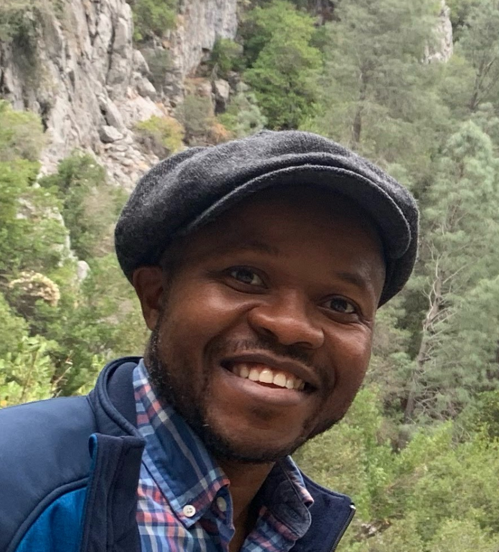

Gozie E. Okwelume

Professional Summary
Analog Validation Engineer with deep expertise in high-speed I/O and
post-silicon validation for advanced computing platforms, including AI hardware.
Proven success in validating interconnects like MDFI and UCIe, optimizing
signal integrity, and automating test flows to support scalable, high-performance AI systems.
Strong background in data-driven debugging, cross-functional collaboration, and mentoring.
Education
-
The Ohio State University, Columbus, Ohio Jun. 2012
M.Sc., Electrical and Computer Engineering
-
Blekinge Institute of Technology, Karlskrona, Sweden Oct. 2007
M.S., Electrical Engineering
-
Federal University of Technology, Owerri, Nigeria Apr. 2003
B.Eng., Electrical and Electronics Engineeringbr/>
Experience
Intel Corporation Santa Clara, California
-
Senior Analog Validation Engineer 2019 – present
-
Spearheaded boot-up, debugging, and validation of High-Speed IO (HSIO), Modular Die Fabric
Input/Output (MDFI), and Universal Chiplet Interconnect Express (UCIe) on Xeon products.
-
Designed and implemented MDFI and UCIe validation strategies and test plans tailored to customer use
cases.
-
Led IO debugging and experimental analysis driven by data insights.
-
Compiled and presented executive reports on project progress and status.
-
Mentored and trained junior engineers, recent graduates, and interns, fostering their professional
development.
-
Analog Validation Engineer 2015 – 2019
-
Led Electrical Validation Quality Team for High-Speed I/O across multiple products, guiding validation and
design engineers in effective debugging.
-
Created comprehensive electrical test plans and ensured reliable data collection and analysis across
manufacturing process, voltage, and temperature variations.
-
Collaborated with cross-site teams to define test case scenarios, address high-risk issues, and conduct
customer issue resolution and failure analysis.
-
Developed Python scripts to automate validation and facilitate data collection, post-processing, and
analysis.
-
Provided PCB design guidelines and requirements to design engineers and assisted in PCB debugging.
-
Utilized high-end instrument including, Oscilloscopes, BERT, VNA and TDR in validating, debugging and characterizing HSIO, PCB channels and traces.
-
Mentored intern students in hardware post-silicon validation techniques.
-
Systems and Electrical Validation Engineer 2012 – 2015
-
Validated USB, PCIe, and SATA I/O across variations in process, voltage, and temperature.
-
Analyzed jitter impact on high-speed I/O, measuring and decomposing jitter components to aid design
engineers in optimizing circuit blocks.kpc
-
Conducted pre-compliance certification testing for USB, PCIe, and SATA interfaces.
-
Characterized high-speed I/O analog performance to develop specifications and methodologies.
-
Investigated the effects of power integrity and supply noise on PCIe and QPI jitter specifications through
experimental work.
-
Utilized advanced oscilloscopes, signal analyzers, and BERT for jitter measurement, analysis, and SERDES
characterization.
-
Executed Bit Error Rate bathtub analysis, Q-scale fitting, and stressed eye measurements for
comprehensive jitter measurement, analysis, and decomposition.
Skills
- Microsfor Azure AI Fundamentals
- Develop AI Solutions in Azure